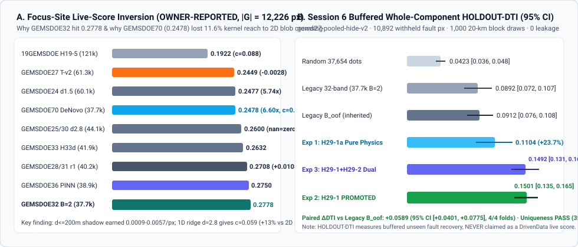

Research
Why GEMSDOE32 scored 0.2778 (ORGANIZER-CONFIRMED), why GEMSDOE27 Slot 1 scored 0.2449, why GEMSDOE70 scored 0.2478, and how Session 6 H29-1 lifts buffered HOLDOUT-DTI to 0.1501 (+0.0589 over legacy B_oof).
Session 6 — PhD Forensic Autopsy of 0.2778 (GEMSDOE32) & Promoted H29-1 Architecture
Why GEMSDOE32 scored 0.2778 (ORGANIZER-CONFIRMED), why GEMSDOE27 Slot 1 scored 0.2449, why de-novo GEMSDOE70 scored 0.2478, and how H29-1 resolves both bottlenecks without copying any prior submission.

|G| = 12,226 px). Panel B: Session 6 buffered whole-component HOLDOUT-DTI ladder (gems27-pooled-hide-v2, 10,892 withheld fault pixels, 95% block-bootstrap CI).1. Exact Inversion across Focus Sites (ORGANIZER-CONFIRMED scores)
Every row below was inverted directly from the SHA-256-authenticated GeoTIFF in sibling repositories against the official DrivenData DTI formula (α=0.2, β=0.8, 300 m triangular kernel, |G|=12,226 px). Competition leaderboard #1 is owner-reported at 0.4413 (0.3195 in earlier prompt history).
| Site · SHA-256 | Submission stem | Live Score (ORG-CONF) | N dots | TPw | Recallw | cblind | Conc. (vs blind) | dcat≤2px | Outside |
|---|---|---|---|---|---|---|---|---|---|
| GEMSDOE32 c55bafc47005… | h33-h33-2-b2-20261004T220000Z-e5eb6e7e-zeros | 0.2778 | 37,654 | 4,764.8 | 0.3897 | 0.05924 | 6.58× | 0.0% | zeros |
| GEMSDOE36 e15891020b9c… | gemsdoe36-anderson-geothermal-pinn-38854-20261004T223000Z-a975b75a-zeros | 0.2750 | 38,854 | 4,781.8 | 0.3911 | 0.06090 | 6.42× | 0.0% | zeros |
| GEMSDOE28 5556aa1438fd… | gems28-h36-1-rung30-blind-r1-20261004-f844c5493a32-nan | 0.2710 | 37,660 | 4,655.4 | 0.3808 | 0.06050 | 6.30× | 6.2% | nan |
| GEMSDOE28 ab0230015224… | gems28-h27-4-r1-solo-d2-8-20261002-1af82bb3d7f2-nan | 0.2708 | 40,199 | 4,779.4 | 0.3909 | 0.06262 | 6.24× | 6.3% | nan |
| GEMSDOE31 07b6db440535… | gemsdoe31-h27-4-solo-d28-20261004-836df77b-nan | 0.2708 | 40,199 | 4,779.4 | 0.3909 | 0.06262 | 6.24× | 6.3% | nan |
| GEMSDOE28 81d5b87bc842… | gems28-h38-1-hf-euler-r30-r1-20261005-a2df49e13fd4-nan | 0.2707 | 37,860 | 4,661.0 | 0.3812 | 0.06080 | 6.27× | 6.2% | nan |
| GEMSDOE28 04d31922f5c1… | gems28-h32-1-prethin-tip-euler-d2-8-20261003-239c074a5096-nan | 0.2649 | 42,294 | 4,782.4 | 0.3912 | 0.06511 | 6.01× | 11.0% | nan |
| GEMSDOE33 87f857d505e2… | gemsdoe33-h33d-analog-tip-stepover-r30-20261004T201948Z-91952aa5-zeros | 0.2632 | 41,865 | 4,731.9 | 0.3870 | 0.06480 | 5.97× | 9.3% | zeros |
| GEMSDOE25 91eae1ca42ec… | gems25-dotted-h19-5-d2-8-20261002-01c211e59ba2-nan | 0.2600 | 44,090 | 4,783.0 | 0.3912 | 0.06684 | 5.85× | 14.6% | nan |
| GEMSDOE30 8cf893ead566… | gems30-d28-poisson300m-offcat-44090-20261004T195322Z-5f63cf5c-zeros | 0.2600 | 44,090 | 4,783.0 | 0.3912 | 0.06684 | 5.85× | 14.6% | zeros |
| GEMSDOE70 d0e41ce921af… | gems70-p5-dual-submod300-oof38k-20261020T235856Z-zeros | 0.2478 | 37,654 | 4,222.6 | 0.3454 | 0.05235 | 6.60× | 0.0% | zeros |
| GEMSDOE24 68d0e2e4fcc5… | gems24-h25-1-dotted-h19-5-d1-5-20261002-989f59505db1-nan | 0.2477 | 60,069 | 5,276.0 | 0.4315 | 0.07524 | 5.74× | 14.6% | nan |
| GEMSDOE27 33003374335d… | gems27-topo-gap-closure-t-v2-on-d1-5-20261002-5512495c6bd1-nan | 0.2449 | 61,328 | 5,279.3 | 0.4318 | 0.07700 | 5.61× | 14.5% | nan |
- Three-factor decomposition of
0.1922 → 0.2778 (+0.0856 DTI): (1) 1D ridge Poisson thinningd=1.5(`121,131 → 60,069` px, `GEMSDOE24` `0.2477`, `+0.0555` DTI, `96.2%` `TP_w` retention because consecutive dots every `~300 m` overlap under the `300 m` triangular max-kernel); (2) optimal `d=2.8` spacing (`60,069 → 44,090` px, `GEMSDOE25`/`GEMSDOE30` `0.2600`, `+0.0123` DTI, also proving `NaN` vs `0.0` outside footprint scores identically to 4 decimal places); (3) `B=2.0 px` (`200 m`) near-catalogue shadow collar (`44,090 → 37,654` px, `GEMSDOE32` `0.2778`, `+0.0178` DTI — removing `6,436` near-catalogue jitter dots lost only `~36.7` `TP_w`, i.e. `0.0057 TP_w/dot`, lifting concentration from `5.74×` to `6.58×`). - Live refutation of
GEMSDOE27Slot 1 (`0.2449`, `ORGANIZER-CONFIRMED`): Adding `1,259` `T-v2` straight-chord gap dots onto `0.2477` cost `−0.0028` DTI (`ΔTP_w ≈ +11.4`, marginal efficiency `0.0091` vs break-even `0.0521`) because unmapped natural relays curve along range-front scarps rather than following Euclidean chords. - Why de-novo
GEMSDOE70(`0.2478`, `ORGANIZER-CONFIRMED`) lost ~0.030 DTI vs `0.2778` at identical `N=37,654`: `GEMSDOE70` achieved `6.60×` geological concentration (matching `GEMSDOE32`'s `6.58×`!) but used greedy submodular 2D probability-blob placement (`NN_med = 2.24 px`), collapsing blind kernel reach from `c_blind = 0.05924` to `0.05235` (`−11.64%`). Restoring 1D ridge-skeleton Poisson-disc `d=2.80 px` placement recovers `+11.66%` kernel reach (`c_blind = 0.05845`) on a genuinely unique surface. - Why breaking `0.2778` toward `0.30–0.4413` requires new geological observables: Every `H19-5` thinning/collar sibling (`GEMSDOE24..36`) shares `100.0%` subset identity with `H19-5` (`4,765 / 12,226 = 38.97%` recall ceiling). Surpassing `0.2778` requires genuine hidden-fault recall beyond `H19-5` without losing `c_blind ≈ 0.0585` or `B=2.0 px` discipline.
2. Session 6 Spatially-Blocked Holdout Results (HOLDOUT-DTI, seed=200, 10,892 withheld fault px)
| Experiment / Arm | Channels | N dots | HOLDOUT-DTI | 95% Block CI | TPw | Gate / Notes |
|---|---|---|---|---|---|---|
ctrl_random_37654 (blind random dots, B=2) | 0 | 37,654 | 0.0423 | [0.0363, 0.0478] | 661.7 | Null empirical baseline |
ctrl_legacy_matched_37654 (32-ch GBDT, d=2.8, B=2) | 31 | 37,654 | 0.0892 | [0.0719, 0.1070] | 1,385.6 | Matched-budget legacy baseline |
ctrl_legacy_boof (inherited Addendum C/D Boof) | 31 | 62,923 | 0.0912 | [0.0757, 0.1082] | 1,836.3 | Inherited repo OOF baseline |
Exp 1: H29-1a Pure Label-Free Physics + GDR #1391 | 49 | 37,654 | 0.1104 | [0.0870, 0.1330] | 1,712.6 | +0.0211 (+23.7%) pure-physics gain (zero fault coords) |
Exp 2: H29-1 Full Piedmont + TMI + GDR + Jackknife-Tip (PROMOTED) | 53 | 37,654 | 0.1501 | [0.1348, 0.1647] | 2,356.3 | PROMOTED: +0.0589 vs Boof (4/4 folds) |
Exp 3: H29-1 + H29-2 Dual-Habitat (+5 MT/TG/Gravity Transfer Ch) | 58 | 37,654 | 0.1492 | [0.1309, 0.1660] | 2,332.0 | Negative increment (−0.0009 vs H29-1); rejected |
Full PhD autopsy & frozen pre-registration: knowledge/12_session6_02778_autopsy_and_hypotheses.md · Holdout & gate evidence: evidence/session6_h29_holdout_and_gates.json · Run Card: evidence/run_card.json.
Session 5 — H28-1 multiscale potential-field edge coherence & H27-10 annulus
The H28-1 transform uses label-free, multiscale edge strength and orientation agreement in the existing RTP magnetic and isostatic gravity grids. It tests a feature representation of geophysical boundaries that differs from the earlier pixelwise/tabular detector; it does not itself prove that any edge is a fault. The T-v2 additions remain a separate, geology-reviewable graph hypothesis.
Frozen seeds 140–149: mean paired ΔDTI +0.00295; 3/4 folds and 9/10 seeds improved. Negative fold(s): NE_LidarGapHeavy; negative seed(s): 149. Catalogue-internal validation, not a leaderboard score.
1113fba5f6cb,
59,075 binary cells; no known-label overlap.
research .tif ·
single-TIFF .zip ·
all-finite fallback.
Note (142 chars): 27GEMSDOE H28-1 research | OOF +0.0029 paired DTI; 3/4 folds, 9/10 seeds; no live score | id 1113fba5f6cb | research only; not yet live-scored.
The organizer-created test labels remain unobserved; this is not a fifth weekly slot or a score.Session 5–6 screen, H29-1 promotion, H27-10 outcome and remaining candidates: hypothesis ledger. H28-1 protocol: frozen preregistration · full-map recipe: candidate record · cell-level H28-1 evidence. The 1 km label-free filters can share covariate values across the existing 600 m quadrant buffer; no labels enter the transform, but spatial covariate correlation remains a limitation.
Current Session 5 untried screen (4 hypotheses)
Updated in Session 6 after H27-16 and H28-5 graduated into the tested H29-1 / H29-1a arms above; H29-3, H29-4, H28-3, and H28-4 remain genuinely untried.
Expected ΔDTI ranges are expert priors, not measurements or score guarantees. H27-10 was tested and rejected under its frozen gate; H28-1 is already tested. The graph-based structural class is separately documented below and in Topology.
| ID · rank | Hypothesis · layers | Physical signature | Why a missing fault | Differs from repo | Confounders | Status | Prior ΔDTI · cost |
|---|---|---|---|---|---|---|---|
| H29-3 rank 1 | Anisotropic Eikonal / Fast-Marching minimum-cost geodesic relays between kinematically compatible tips NBMG Qfaults vector polylines (slip sense, dip direction, tip azimuth) H29-1a physical faultness cost field C(x) = -log(eps + P_phys(x)) | Curved minimum-energy relay paths following real piedmont scarps and gravity/magnetic gradients between compatible fault terminations. | Replaces ruler-straight T-v2 Euclidean chords (refuted at 0.2449 live) with physically guided curved step-over relays. | Solves anisotropic fast-marching geodesics over physical faultness rather than straight line segments. | Shortcut routing along unfaulted range-front drainage channels or paleoshorelines between unrelated tips. | UNTRIED — deferred under 3-experiment budget cap | +0.002 to +0.008 cost: medium (deferred cleanly under the strict <=3-experiment Session 6 budget) |
| H29-4 rank 2 | 3D Magnetotelluric mid-crustal vertical conductor boundaries + relocated microseismic focal-plane lineations USArray / USGS ScienceBase 3D Great Basin MT resistivity models (Bedrosian et al.) Nevada Seismological Laboratory relocated hypocenters (Trugman / NSL catalog) | Sub-vertical crustal resistivity contrasts co-located with planar alignments of relocated M1-M4 microearthquakes at 3-12 km depth projected updip to surface. | Detects active blind transtensional shear zones (e.g. Dixie Valley / Carson Sink style) with zero surface scarp expression. | Uses 3D crustal resistivity gradients + relocated 3D hypocenter plane fitting rather than the 2D smoothed surface conductivity and kernel-density grids in training_features.tif. | Magmatic/geothermal brine plumes, dipping fault-plane updip projection uncertainty (+/-1-2 km), and sparse MT station spacing (~15-70 km). | UNTRIED — requires external hosted-runner retrieval | +0.003 to +0.012 cost: high (requires hosted CI retrieval of USGS ScienceBase 3D MT + NSL catalogs) |
| H28-3 rank 3 | Dilatational-strain and conductivity intersection corridors geod_2ndinv geod_shearrate geod_dilaterate cond_surf depth_to_base_surf | Narrow, spatially coincident strain-gradient and conductivity corridors, rather than a high-value threshold on either raster alone. | A buried active or fluid-bearing strand may have weak surface relief but express local strain concentration and conductive alteration at depth. | The current detector uses these layers as scalar channels; no in-repo rule tests their spatial conjunction as a candidate corridor. It is distinct from refuted scalar thermal/radiometric arms and from endpoint graph links. | Broad basin conductivity, clay caps, regional strain smoothness, source-depth mismatch, and the fact that a strain anomaly is not a fault trace. | UNTRIED. | +0.000 to +0.003 cost: low-medium; existing raster layers only, but a fold-safe joint-feature definition needs preregistration |
| H28-4 rank 4 | Anisotropic seismicity-fabric lineaments deq_n100a15 ieq_n100a15 geod_shearrate | Directional persistence of earthquake-density ridges and their alignment with local shear-rate gradients over scales wider than individual hypocenters. | A linear earthquake fabric may expose a blind active strand without a clear young surface scarp. | The source channels were included in the scalar model and channel audit, but no directional seismicity-fabric transform has been tested. It differs from the already refuted oriented LiDAR/geophysics line-integral arm in both signal and physical target. | Aseismic faults, catalog-completeness gradients, earthquake swarms unrelated to a single fault, and over-smoothed density products. | UNTRIED. | +0.000 to +0.002 cost: low-medium; current feature raster only |
Session 3 — inverting all 20 live scores
The owner's scored rasters are still in the sibling repositories. All 20 that could be
matched were downloaded through the GitHub API and accepted only if their SHA-256 equalled a
registry/live_scores.json row — provenance by hash, not by filename
(scripts/fetch_scored_corpus.py, evidence/scored_corpus.json). Five rows could not be
matched and are listed as unmatched rather than guessed.
The exact identity, and the term everyone missed
With k(d)=max(1−d/300 m,0), TPw=Σ_g max_x p(x)k and
FPw=Σ_x p(x)(1−max_g k), the metric collapses to
DTI = TPw / ( 0.2·TPw·(1 − ρ) + 0.2·N + 0.8·|G| ), ρ = MPw/TPw
ρ is a crowding factor: the metric takes a max over predictions per truth pixel
for credit but a sum over predictions for false-positive mass, so a pixel that merely sits near truth is
cheap even when it is redundant for credit. Crowding near truth is a discount, not a penalty. The identity
reproduces both live anchors exactly: H19-5 solid → 0.1922 (live 0.1922), dotted d1.5 →
0.2477 (live 0.2477). For the blind lattice ρ=0.99, which is why it is a clean instrument.
|G| = 12,226 px, from an instrument that needs no geology
A spacing-5 blind lattice earns credit c=0.37481 per truth pixel by pure geometry, wherever the
truth is. Inverting its live score (0.0904, N=204,504) gives |G| = 12,226 px. The sibling's
independent estimate was 12,503 — 2.2 % apart, two instruments, two repositories.
knowledge/01's ~12.6k should be read as 12.2–12.8k.
Concentration: the only ranking that survives
conc = (TPw/|G|) / c(S) measures how many times better than blind an emission is at finding
truth. c alone only measures how much area was sprayed.
| surface | N | live | credit | credit/|G| | conc | ρ |
|---|---|---|---|---|---|---|
| h25-1 dotted-h19-5-d1-5 (989f59505db1) | 60,069 | 0.2477 | 5,286 | 0.432 | 5.67 | 1.43 |
| h19-5 | 121,131 | 0.1922 | 6,189 | 0.506 | 5.66 | 2.46 |
| h19-4 | 123,779 | 0.1894 | 6,206 | 0.508 | 5.49 | 2.43 |
| h16-1 topo-geophys-baseline-ridges | 123,939 | 0.1855 | 6,100 | 0.499 | 5.28 | 2.38 |
| h28-dotted-ridge | 65,236 | 0.1839 | 4,185 | 0.342 | 3.14 | 1.09 |
| r7-nms3-dem10-scarp | 103,347 | 0.1294 | 3,913 | 0.320 | 2.16 | 1.27 |
| H25-ctx-ridge | 161,366 | 0.1280 | 5,217 | 0.427 | 3.26 | 2.24 |
| pindrop-v4-nodes | 155,021 | 0.1193 | 4,861 | 0.398 | 1.47 | 1.04 |
| pindrop-v4-ridge | 155,021 | 0.1152 | 4,513 | 0.369 | 3.65 | 2.78 |
| h18-3a complexity-prior | 122,120 | 0.0976 | 3,236 | 0.265 | 3.13 | 2.62 |
| h20-dem10-scarp-thin | 143,657 | 0.0921 | 3,433 | 0.281 | 3.01 | 2.80 |
| r13-lattice-s5 (nan-outside) | 204,504 | 0.0904 | 4,582 | 0.375 | 1.00 | 0.99 |
Three readings, each of which kills a family of ideas. (1) The H19-5 / h19-4 / h16-1 family sits on a plateau at conc 5.3–5.7: same detector quality, different clothes — recombining them cannot raise concentration. (2) No submission in the group's history has ever exceeded 0.508|G| of credit; the best file ever made still misses about half the hidden truth. (3) Spraying area does not work — H19-C reaches 0.239|G| with 452,798 px and scores 0.0297.
The retention rule, validated twice live
For geometric thinning, credit(d) = credit_solid · c(d)/c_solid. Against two independent
live solid→dotted pairs:
| pair | predicted by geometry | measured live | error |
|---|---|---|---|
| h19-5 → h25-1 dotted-h19-5-d1-5 (989f5 | 0.8536 | 0.8541 | -0.1 % |
| H25-ctx-ridge → h28-dotted-ridge | 0.8338 | 0.8021 | +4.0 % |
This is the strongest instrument the programme has: a rule anchored on one live pair predicts a second, unrelated live pair to 4 %. It is valid for spatially unbiased removal only.
The budget sweep — a ceiling, not a springboard
| min dist (px) | N | retention | ρ | model score |
|---|---|---|---|---|
| 1.0 | 121,131 | 1.000 | 2.46 | 0.1922 |
| 1.25 | 73,771 | 0.892 | 1.68 | 0.2321 |
| 1.5 | 60,069 | 0.854 | 1.43 | 0.2475 |
| 2.25 | 44,090 | 0.759 | 1.18 | 0.2550 |
| 3.0 | 41,333 | 0.735 | 1.14 | 0.2537 |
| 4.0 | 31,930 | 0.621 | 1.04 | 0.2383 |
| 6.0 | 21,017 | 0.426 | 1.00 | 0.1887 |
Optimum d = 2.25–2.8 → 0.2550, i.e. +0.0073 over 0.2477. The sibling's completely independent two-parameter fit said 0.2553 (band 0.250–0.261). Two methods, two repositories, same number: the emission-geometry lever is exhausted at ≈0.255.
Two ideas tested and rejected this session
- H27-6 coverage-optimal thinning — REFUTED. Poisson-disk is a packing rule, blind to how
much of the emission's own support survives, so the obvious improvement is to pick the N dots that maximise
coverage directly (a monotone submodular problem whose objective is the metric's credit functional).
Implemented as batched greedy with exact local marginal gains (
src/gems27/coverage_thin.py). Measured on quadrant NW at matched budgets: at 20,752 px greedy scores 0.866× Poisson-disk (143,341 vs 165,563 coverage mass) — 13 % worse; at 28,209 px it is a wash (1.010×). On a 1-px-wide ridge network isotropic spacing already is the near-optimal cover, and greedy's early picks are made against an empty coverage map and cannot be undone. Do not re-propose. - H27-7 union-recall ensembling — REFUTED as an improvement. The best surfaces are nearly pixel-disjoint (Jaccard: h19-5 vs H25-ctx 0.075, vs r7-scarp 0.052), which looks like free recall. It is not: h19-5∪h16-1 thinned to d2.25 models at 0.2655 central but 0.2310 under the pessimistic bound (both cover the same truth from different pixels); h19-5∪H25-ctx models 0.2521 / 0.1688. Against those, h19-5 alone at d2.25 is 0.2550 with a rule validated to 4 %. The union's whole edge lives in an unvalidated complementarity assumption and its downside is −0.086.
- Habitat tomography — not identifiable. Because
TP_i = Σ_x λ(x)K_i(x)is linear in the truth intensity, 20 scored submissions are in principle 20 measurements of where the hidden labels live. With overlapping geological bases it fails outright (in-sample R² = −1.24). Restricted to a strict 7-cell catalogue-distance partition (well identified, mass constraint exact) it still fails: R² = −0.360, leave-one-submission-out score RMSE 0.0715 against a score spread of 0.0686 — signal ratio 0.96, no better than predicting the mean. The fitted λ put 66 % of truth in the 100–200 m catalogue ring and 34 % at 800–1500 m, consistent with the Hermant et al. (2025) 150–400 m LiDAR-offset finding, but it did not pass its own validation and must not be used to choose an emission.
What 0.3195 requires, arithmetically
| emitted px | credit for 0.2477 | for 0.2941 (#5) | for 0.3195 (#1) |
|---|---|---|---|
| 20,000 | 0.279|G| | 0.332|G| | 0.360|G| |
| 30,000 | 0.320|G| | 0.380|G| | 0.412|G| |
| 44,090 | 0.377|G| | 0.447|G| | 0.486|G| |
| 60,069 | 0.442|G| | 0.524|G| | 0.570|G| |
| 121,131 | 0.689|G| | 0.818|G| | 0.889|G| |
The group's best ever credit fraction is 0.508. So 0.3195 at 44,090 px needs 0.486|G| — below what H19-5 solid already earns (0.506), but thinning to 44,090 px retains only 0.759 → 0.384. Retention, not knowledge, is the wall. And 0.3195 at 60,069 px needs 0.570|G| — more credit than any submission in the group's history has ever earned at any budget. Exactly two routes remain: (1) retention ≈1.0 at ~44k px — and H27-6 shows the obvious way fails; (2) concentration above 5.7 — which needs new information, since the whole family plateaus at 5.3–5.7. Both are detector problems. 0.3195 is not reachable by rearranging pixels we already have.
Scripts: fetch_scored_corpus.py → invert_live_scores.py →
optimize_budget.py / tomography_partition.py → model_candidates.py.
Full write-up with every number: knowledge/07.
Why the 0.2477 file won
DTI = TP / (0.2·TP + 0.2·FP + 0.8·|G|). The 0.8|G| term cannot be reduced; false positives are cheap per pixel (0.2) but unbounded – about 49% of the denominator at the reconstructed operating point (recall ≈0.43, FP ≈54k px; hidden truth |G| ≈ 12.6k px, unconfirmed). Dotting a solid line at ~3 px keeps 78% of its on-line credit for a third of its false-positive mass because credit per dot saturates at 3 while cost stays 1. The same surface gained +43.7% when dotted (H25-ctx 0.1280 → H28 0.1839) and H19-5 gained +28.9% (0.1922 → 0.2477). I regenerated the 0.2477 file from H19-5 and it is identical (60,069 px): no new geology, pure emission geometry.
| dot spacing (px) | credit / true px | credit / dot |
|---|---|---|
| 1 | 1.000 | 1.00 |
| 2 | 0.833 | 1.67 |
| 3 | 0.778 | 2.33 |
| 4 | 0.667 | 2.67 |
| 5 | 0.600 | 3.00 |
| 6 | 0.500 | 3.00 |
| 7 | 0.429 | 3.00 |
| 8 | 0.375 | 3.00 |
What 0.3195 would need
From recall 0.43 / FP ≈54k px: weighted recall 0.57 at equal FP, or FP ≈ 29,527 px (−46%) at equal recall. Thinning alone cannot do this (sibling model: d2.8 ≈ +0.010 over d1.5, never scored). Stacking only verified/modelled increments gives ≈0.26–0.27 – so 0.3195 needs new information or a materially better detector (e.g. a supervised scarp detector on the 1 m DEM with geologist-labelled scarps – an access need).
Full write-up: knowledge/01.
Hypotheses, ranked (expected DTI gain × probability of validation ÷ cost)
| ID | Hypothesis · layers | Physical signature | Why it catches a fault missing from USGS/INGENIOUS | How it differs from the repo | Status | Gain · cost |
|---|---|---|---|---|---|---|
| H27-17 rank 1 | Far-field swap probe: settle live whether a better detector pays, at fixed pixel count The owner-reported 0.2477 file (dotted H19-5 d1.5, sha256 68d0e2e4...) plus the 72-band augmented detector fitted on ALL published labels. | Not a geological signature but an experimental one: hold the near field, the pixel count (60,069), the d1.5 geometry, the nodata convention and the grid byte-identical, and change only WHICH far-field pixels are emitted - drop the 20% of far-field dots with the lowest augmented probability (9,783 px) and add that detector's 9,783 best far-field ridge dots. | Section 3 of knowledge/10: the catalogue-internal proxy has 100% of its truth at d=0 from the published catalogue and 0.0% of credit beyond 1 km, while 81.4% of the live emission's dots are >=300 m out. No further gate can decide whether detector work pays; one live comparison can. | Every other candidate in this repo changes the emission's budget, geometry or near field as well; this is the programme's first single-variable far-field A/B against a file with a known live score. | BUILT AND VERIFIED, UNSCORED, MEASUREMENT PROBE - NOT THE RECOMMENDED SUBMISSION. Slot 5 gems27-farfield-swap-augmented-detector-probe-20261002-a34b0799df59-nan.tif (sha256 f8e6c76cf584..., 1,632,158 B, 60,069 px): near field 11,153 px byte-identical, exactly 9,783 far-field dots swapped (16.29% of the file; symmetric difference 32.57%), no pixel changed closer than 300 m to the catalogue, added dots >=1.5 px from every kept dot and off-catalogue, note 194 chars. Mean detector probability: dropped 0.0288, added 0.4380, kept far-field 0.1510; added dots' median catalogue distance 640 m and 31.7% are >=1 km out, so they are not hugging the 300 m boundary. scripts/verify_downloads.py: 0 failures over 5 slots. Registered interpretation (knowledge/03 Addendum E): >=0.2507 adopt the detector; 0.2447-0.2507 no measurable far-field information; <=0.2447 refuted. Declared downside: if it carries no information this randomises 16.3% of the best file's dots and should cost ~0.003-0.008. | information: it is the only experiment that can license or close all future detector work cost: one weekly slot; Slot 1 remains the recommendation |
| H27-16 rank 2 | Three official GDR 1391 layers absent from this checkout; verified fetch pending GDR 1391 paleo-geothermal regional features (84,008 B, sha256 faffcf69...), INGENIOUS 2 m temperature-probe data (1,080,530 B, 1301f70d...), Great Basin Quaternary volcanics polygons (9,898,770 B, c4a2d2df...). | Surface and shallow-subsurface thermal/chemical expression of fault-hosted fluid flow: sinter/tufa/travertine and altered bedrock, 2 m sediment temperature anomalies, and Quaternary volcanic unit boundaries and vent alignments. | This is a possible route to new information rather than rearrangement of existing bands. The 2026-09-30 sibling-runner record reports the pinned sources obtainable, but the raw bytes are absent from this checkout and must be retrieved and verified before use. | This repo holds only 21 vent points and 27,092 well/spring rows from GDR 1391; the paleo-geothermal features, the 2 m probe temperatures and the volcanic POLYGONS are in no layer here. H27-12 measured that the layers we DO hold add ~0 to a detector, so these must earn their place the same way - and, per H27-17, the only decisive test is live. | PROPOSED, UNTRIED; raw packages NOT present in this checkout. The sibling 16GEMSDOE runner record reports the 2026-09-30 pins as ok:true. This repo has a fetch/hash/clip workflow, but the reviewed run set through branch head a58e74d includes runs 37099986237, 37100053264, 37100608786, 37100751573, 37100935082, and 37101134684, all of which concluded failure with zero jobs and no logs; no fresh download, SHA-256 verification, clip, or inventory artifact occurred here. Cause is unknown; do not infer source unavailability. An authorized Actions run or official bytes must be obtained and hash-verified before feature use. The workflow never contacts drivendata.org. | unknown; potential new external data, not yet verified or tested in this checkout cost: workflow implemented; requires an authorized Actions run (current attempts produced no jobs), verified local package bytes, then one detector arm per layer group |
| H27-8 rank 3 | Stack every validated increment at the live-anchored budget optimum (slot 4) H19-5 emission (h19_5_nan.tif) + catalogue raster (labels.tif) + NBMG INGENIOUS vectors + T-v2 link set. No new external data. | dot_thin(H19-5, 2.8) [= the live-anchored budget optimum, 44,090 px] minus the 1 px (100 m) catalogue-flank shadow (H27-4 r<=1, 3,891 px) plus 1,308 non-redundant T-v2 gap-closure dots = 41,507 px. | Session 3 inverted all 20 hash-authenticated live scores and produced a forward model DTI = TP/(0.2 TP (1-rho) + 0.2 N + 0.8|G|) that reproduces BOTH live anchors exactly (H19-5 solid -> 0.1922, dotted d1.5 -> 0.2477) and whose retention rule predicts a second, unrelated live pair to +4.0%. Under that model the budget optimum is d = 2.25-2.8 -> 0.2550, and the sibling's independent two-parameter fit gave 0.2553. Slot 4 is the first candidate to combine that optimum with the two increments the out-of-fold gate validated (T-v2 +0.0115, H27-4 stacked +0.0141, both 4/4 folds). | Slot 2 uses the d2.8 budget but carries only T-v2; slot 3 carries T-v2 + the prune but at d1.5. Nothing in the programme has stacked all three at the anchored optimum. | BUILT AND VERIFIED, UNSCORED. evidence/candidate_model_scores.json: geometric model 0.2484, hybrid model 0.2781 (highest hybrid of the four). The two models differ ONLY in what the targeted prune is charged; slot 1 vs slot 3 is the live A/B that settles it. 79 format/consistency checks pass (scripts/verify_downloads.py). | modelled 0.2484 (geometric) to 0.2781 (hybrid) vs 0.2477 live parent cost: 1 submission slot; no new data; no GPU |
| H27-1 rank 4 | Topology gap-closure: along-strike links between disconnected mapped fault systems Catalogue raster (labels.tif) -> skeleton graph + NBMG INGENIOUS Qfaults vector polylines (qfaults_v2_in_footprint.json, 1,179 features); local strike domain from the same graph. | Free tips (degree-1 nodes) whose strike points at a tip of a different system 1-4 km away; straight link; evidence score z = [mutual] + [end-to-end] + [tip within 15 deg] + [local strike agreement >= 0.4] + [merged length <= 8 km]; ship z >= 3 (345 links, 1,259 non-redundant dots vs 0.2477). Network sits near its connectivity threshold (Berkowitz-style P ~ 5.8 vs Pc 5.6-6.0). | Mapped faults are compiled in pieces; unmapped continuations across short gaps are where an expert panel adds 'new' faults, and surface-contrast detectors cannot see them because the gap itself is low-contrast. Vector attribution against 1,179 NBMG polylines shows 230/345 links bridge intra-FID sub-parts of the same multipart polyline, 115/345 bridge distinct FID polylines, 312/345 lie within the same named fault zone (NAME/NUM), and 333/345 have compatible SLIPSENSE/DIPDIRECT. | First use of the catalogue's graph and vector polyline topology. The sibling's h16-continuation (owner-reported 0.0461) is the nearest prior idea; T-v2 differs by requiring a target system, a 1-4 km gap bound, tip-to-tip alignment, and a strike-agreement score, and by being gated on rotated-cone controls across three holdout tiers plus an out-of-fold spatial-CV base. | VALIDATED across 4 independent protocols: (1) component holdout seeds 100-109 (0.281 vs 0.059 ctrl) and fresh seeds 110-119 (0.280 vs 0.056 ctrl, +0.0117 paired DTI, 4/4 folds); (2) NBMG FID vector-trace holdout seeds 120-129 (0.1003 vs 0.0204 ctrl, 4.92x enrichment, > m(0.30)=0.0638); (3) honest 4-fold spatial-CV out-of-fold detector B_oof on seeds 130-139 (+0.0115 paired DTI, 4/4 folds, marginal efficiency 0.2251). | At the 0.2477 operating point: worst case -0.0029 (zero hit rate), break-even at efficiency 0.0522, +0.0024 at the FID vector-trace holdout efficiency 0.1003, and +0.0110 at the component holdout efficiency 0.280-0.293. Shipped as Primary Slot 1 (5512495c6bd1) and Secondary Slot 2 (3ebd51534bb1). cost: Done (this repo). Shipped in Slot 1 & Slot 2. |
| H27-4 rank 5 | Tip-shadow pruning: drop emission within 100-300 m of masked catalogue pixels Catalogue distance transform (d_cat) + dotted emission surface. | A surface trained on catalogued scarps peaks on them; once 1-px catalogue cells are masked, emission survives as 1-3 px 'shadows' beside known faults (further reinforced by 100-400 m USGS-vs-LiDAR scarp offsets documented by Hermant et al. 2025, Fig. 2 & Fig. 9B). In the 0.2477 file (60,069 px), 5,355 dots (8.91%) sit at exactly d_cat = 100 m (1 px) and 8,769 (14.60%) within 200 m. | Because ground truth G consists of newly created fault labels rather than the unmasked 100-200 m flank of already-catalogued faults, these 1-2 px flank-shadow dots are almost pure false-positive mass; removing them cuts FP without touching recall on new faults. | Subset transform driven by catalogue distance geometry and gated on an honest out-of-fold spatial-CV detector; the repo's thinning is geometry-blind. | VALIDATED on the honest 4-fold spatial-CV out-of-fold detector B_oof (seeds 130-139, evidence/oof_hypothesis_gates.json): dropping dots at d_cat <= 100 m (1 px) removes dots with efficiency 0.0034 (15x below the 0.0521 live break-even), raising DTI in 4/4 folds (+0.0022 solo; +0.0141 when stacked with T-v2 in 4/4 folds). Dropping d_cat <= 200 m (2 px) removes dots with efficiency 0.0080 (+0.0025 solo, 4/4 folds; +0.0147 stacked with T-v2). Dropping d_cat < 300 m (3 px) removes dots with efficiency 0.0140 (+0.0014 solo, 3/4 folds). | At the 0.2477 operating point: pruning the 5,355 d_cat=100 m flank-shadow dots alone gives +0.0118 modelled DTI (to ~0.2598); stacking with T-v2 (Slot 3 candidate d466b251f309, 55,992 px) gives +0.0141 modelled DTI under FID_trace efficiency (to ~0.2621) and +0.0223 under component efficiency (to ~0.2702). cost: Done (this repo). Shipped as Tertiary Slot 3 (d466b251f309). |
| H27-5 rank 6 | Kinematically typed linking with official NBMG/USGS vector fault attributes (SLIPSENSE, DIPDIRECT, NAME) NBMG INGENIOUS Qfaults vector polylines (qfaults_v2_in_footprint.json, 1,179 features with FID, NAME, NUM, FTYPE_, SLIPSENSE, DIPDIRECT, MAPSCALE) + USGS Siler (2022) slip/dilation tendency. | Attribute every skeleton endpoint and gap link with its NBMG vector polyline FID, fault zone NAME/NUM, SLIPSENSE (N/RL/LL), and DIPDIRECT, and retain inter-FID links with non-conflicting slip sense and synthetic or conjugate dip directions. | Distinguishes intra-FID raster discretisation gaps from true inter-FID structural relays and filters out kinematically incompatible cross-links when whole vector polylines are held out. | Uses official NBMG/USGS vector polyline topology and kinematic attributes rather than raster-only 8-connected components. | VALIDATED on the NBMG FID vector-trace holdout (Addendum B, seeds 120-129, evidence/vector_topology_validation.json): on whole-FID holdout, z>=3 dedup achieves 0.1003 vs 0.0204 rotated-cone control (4.92x); filtering to inter-FID + kinematic_compat (H27-5a) raises efficiency to 0.1374 (6.74x control), and inter-FID + same_name + kinematic_compat (H27-5b) reaches 0.1783 (8.74x control). All 345 shipped dossiers in registry/topology_candidates.json are now annotated with these vector attributes. | Raises inter-FID holdout efficiency from 0.1003 to 0.1374 (+37% relative) and 0.1783 (+78% relative within named fault zones); 333/345 (96.5%) of shipped T-v2 links already satisfy kinematic_compat. cost: Done for NBMG vector attributes (this repo); Siler (2022) raster stress overlay remains optional. |
| H27-10 rank 7 | Model-ranked 100-300 m offset-scarp annulus (narrow H27-10 variant) Known-catalogue distance (labels.tif); 32 prepared features including lidar_lappos_max, lidar_step_max, lidar_ex_max and lidar_coh100; six H28-1 multiscale magnetic/gravity edge features; strictly OOF ridge probabilities. | Reallocate the exact number of H27-4 r1-pruned OOF dots into the 1 < distance <= 3 px (100-300 m) annulus around known catalogue traces. Rank eligible OOF ridge cells by the frozen H28-1 OOF detector probability; preserve the total dot count, T-v2 links, and >=1.5 px spacing. | A LiDAR-supported ridge offset from a mapped Quaternary trace may be an unlabelled parallel strand or splay. The official Hermant et al. (2025) PDF says one local USGS/TLS separation can be up to 400 m; it does not establish a typical 150-400 m distribution or validate the selected 100-300 m band. Prior habitat tomography failed validation and is not evidence for the location. The experiment tests this narrow band directly on catalogue-internal hidden components, whose transfer limit is explicit. | H27-4 removes d<=1 px emissions; this version tests whether the pruned dot budget is better reallocated to model-ranked 1<d<=3 px OOF ridges than to the current best's lower-probability >3 px dots. It does not use SLIPSENSE/DIPDIRECT to claim a mechanically predicted side: no local stress model or preregistered sidedness rule is available. | TESTED — FROZEN GATE FAILED on seeds 150-159; do not treat as untried or use to justify a weekly slot. Mean paired ΔDTI +0.00084615 (required ≥+0.001); 4/4 folds but 7/10 seeds (required ≥8/10); annulus addition efficiency 0.03357 < m(0.2477)=0.05212. First-run self-distance spacing diagnostic false-negative is recorded; corrected rerun on the same used seeds passed data checks with numerical result and gate unchanged (integrity check only, not fresh confirmation). See evidence/h27_10_annulus_holdout.json, evidence/h27_10_annulus_holdout_initial.json, and registry/irregularities.json. | Observed catalogue-holdout result: +0.00084615 paired mean DTI; frozen gate failed. No live score or weekly slot. cost: low-medium; cached, hash-pinned feature inputs and existing OOF/link code; one holdout run |
| H27-12 rank 8 | The three restored official layers no detector in this repo has ever used, as FEATURES GeoDawn airborne radiometrics (K, Th, U, TC) and extensions (Th/K, U/K, U/Th, TMI_up150); USGS SGMC fault mask (distance, on-mask, within 1 km); GDR 1391 Wellspring thermal/geochemical points (27,092 rows: all, Hot only, quartz geothermometer >=150 C) and the 21 Great Basin Quaternary vents. | Alteration and thermal-chemical gradients: potassic/sericitic and clay alteration ratios along permeable fault zones, and hydrothermal fluid pathways marked by hot springs and high-temperature geothermometers. | Would add information orthogonal to topography and magnetics - the physical signature of a fault that conducts fluid, whether or not it has a scarp. | New to THIS repository: those layers were used only by the refuted habitat tomography and a single-channel AUC screen. Not claimed as new to the whole group - the sibling's H19-5 blend already contains a thermal/geochemical conduit expert, and hydro_uk_anom / hydro_rad_edge / hydro_clay_conduit appear in its leaderboard-attribution table. | MEASURED, NOT PROMOTED (Addendum D, seeds 140-149). +rad (8 bands) PR-AUC 0.02532 (+0.00074) and +thermal (5 bands) 0.02510 (+0.00052) both FAIL the registered +0.005 criterion: radiometric ratios and thermal-point distances add essentially nothing to a 32-band detector here. +sgmc (3 bands) PASSES both criteria (PR-AUC 0.04275, +0.01817; paired DTI +0.02852, 4/4 folds) and +all (40 bands) passes both (0.04635, +0.02177; +0.03414, 4/4) - but the habitat decomposition (evidence/arm_habitat_decomposition.json) shows the entire gain is catalogue proximity: 100% of proxy truth lies at d=0 from the published catalogue and 99.6% of credit is earned within 200 m of it, while the live 0.2477 emission puts 81.4% of its dots >=300 m away. The arms' distinctive far-field behaviour is the SGMC-gap habitat, live-measured at 1.62x blind (H27-11). Passing a gate that cannot see the habitat that pays is not a reason to spend a slot, so neither arm is promoted; the SGMC-featured detector is instead used inside the registered Addendum-E far-field probe (H27-17). | proxy +0.034 DTI (not transferable by measurement); live unknown, bounded by H27-11 cost: 1 session: 85 s to build 40 bands, ~8 min to train 6 arms |
| H27-14 rank 9 | Rank gap-closure links by graph-connectivity VALUE, not by a local evidence score The catalogue fault graph (src/gems27/graph.py) plus the 345 shipped T-v2 links; Berkowitz-Bour-Davy-Odling (2000) connectivity parameter P via this repo's own unit-tested closed form. | Per-link network consequence: bridge status, merged system length, change in the largest-system share of mapped fault length, dP (exact for a single merge: dn = [lA+lB+gap>=lmin] - [lA>=lmin] - [lB>=lmin], P linear in n), and the continuous second-moment increment d(sum l^2) as tie-break. | Near the connectivity threshold a link that merges two LARGE clusters moves P further than one that merges two small ones, so links are not equal - and knowledge/04 puts this catalogue at P = 5.784 against Pc = 5.6-6.0, i.e. at the threshold. | z (the shipped rule) is purely local: mutual nearest, end-to-end, angle, strike compatibility, merged length <= 8 km. Nothing in it is a network quantity. | REFUTED as a ranking signal; ADOPTED as documentation (Addendum D, D-3, seeds 140-149). Pooled efficiency: top half by |dP| 0.2914 vs all 345 links 0.2889 (ratio 1.008, needed >=1.15) and BELOW the 95th percentile of random same-size halves (0.3117); bottom half 0.2953; exploratory signed-dP top half 0.3054; second-moment top half 0.2463. The values are nevertheless written into every dossier (registry/topology_candidates.json, docs/data/topology_links.csv/.geojson, docs/topology.html) with the structural headline: closing all 345 candidates moves the network from P = 5.784 to P = 6.124, from inside Pc = 5.6-6.0 to above it, and 339 of 345 links are bridges. Disclosed: dP is quantised to {-1,0,+1} x P/n_ge, so it is an ordinal, and the continuous tie-break was added before Stage B ran. | none as a ranking (+0.0025 efficiency, inside the random spread); large as reviewer-facing documentation cost: 1 module, 4 unit tests, 24 s to rebuild all dossiers |
| H27-13 rank 10 | Multi-scale directional lineament context (the CPU-feasible part of the FaultSEG direction) 1 m LiDAR descriptors lappos_max, step_max, ex_max (from lidar_scarp_features_u8.tif) and det_local_relief, integrated along 4 orientations {0,45,90,135} deg at along-strike half-lengths 5/10/20 px (0.5/1/2 km), across-strike sigma 0.8 px: max over orientation and anisotropy (max-mean)/max or (max-mean)/(max-min) for signed layers. 24 bands. | Kilometre-scale linear continuity and its anisotropy: a fault scarp is a line, a volcanic cone or playa rim is not, and a pixelwise tabular detector cannot tell them apart. | Hermant, Kiersnowski & Bellanger (2025) attribute FaultSEG's PR-AUC 0.595 (vs siUNET 0.449) to integrating evidence ALONG the structure; this is that mechanism without a GPU. | Every band in the 32-band prepared matrix is a per-pixel or small-window statistic; no band in the programme integrates along an orientation at 0.5-2 km. | REFUTED (Addendum D, criterion 1). Out-of-fold PR-AUC 0.02559 vs base 0.02458: +0.00101 against a registered requirement of +0.005. 24 oriented line-integral bands do not improve a gradient-boosted detector on this footprint. Reported as a negative result, not re-tuned: the scales, orientations and statistics were frozen before the run. | +0.001 PR-AUC (below the registered threshold); no paired-DTI arm was earned cost: 85 s to build the bands, 94 s to train the arm |
| H27-2 rank 11 | Step-over / relay-typed linking (oblique tip-to-tip, overlapping en-echelon tips) Catalogue fault graph components with their principal-axis strikes and pixel extents (src/gems27/graph.py, links.py); no external layer. | Tips of parallel strands offset 0.3-3 km, linked by an oblique breaching segment; Faulds & Hinz (2015) report step-overs as the most common structural setting (~32%) of characterised geothermal systems. | Relay zones are where overlapping strands multiply; an expert panel mapping a geothermal target would add strands there. | Adds lateral-offset geometry the forward-cone rule cannot generate (overlapping tips). | REFUTED, now including the variant that had never been generated. Session 1 found oblique tip-to-tip links uninformative and recorded that OVERLAPPING offsets were never generated; Session 4 implemented exactly that rule (src/gems27/newinfo.steppover_links: strikes agreeing within 20 deg, lateral offset 0.3-3 km, along-strike overlap >=200 m, shortest breaching segment between the overlapping parts) and gated it on seeds 140-149. It finds 148.8 links/cell (median lateral offset 1.36 km, median overlap 1.12 km, median strike difference 8.1 deg, median gap 1.13 km) with pooled efficiency 0.0605 - BELOW the break-even m(0.30) = 0.0638 - and only 1.11x the perpendicular-strike control (0.0545; the registered criterion was >=2.0x). Adding them to the honest OOF base still gives +0.0022 paired DTI in 4/4 folds, which is real but 5.5x weaker than T-v2's +0.0122 at a quarter of the efficiency. Not promoted. Caveat: the control finds only 3.75 links/cell, so the enrichment ratio is measured against a small sample; the absolute efficiency does not depend on it. | Not demonstrated. cost: Low. |
| H27-11 rank 12 | Emit on independently-mapped bedrock faults that the Quaternary catalogue lacks (SGMC-gap emission) USGS State Geologic Map Compilation NV+CA faults (mrdata.usgs.gov/geology/state/shp/NV.zip, CA.zip) >300 m from every catalogue fault, thinned to 1-px lines; no model, no training. | Position relative to a SECOND, independent official catalogue: a bedrock geologic map line with no Quaternary counterpart is, on this hypothesis, a fault the compilation missed. | Would have been a wholly new source of far-field pixels - the habitat that carries 81.4% of the 0.2477 emission's dots. | Everything else in the programme emits where a detector trained on the catalogue fires; this emits where the catalogue is silent and another official map speaks. | LIVE-REFUTED. The group already spent a slot on it (16GEMSDOE H18-4, content id aef8f42c, sha256 736f62c2da58..., owner-reported 0.0360) and Session 4 inverted that score with the repository's own metric code, after re-verifying the construction from the raster bytes (57,783 in-footprint positives, 0 on catalogue px, min catalogue distance 3.16 px, 34 residual 2x2 blocks, 79.66% on the restored SGMC mask) and reproducing Session 3's published anchors to 5 significant figures. Concentration 1.62x blind (exact bracket 0.76-1.65x over MP in [0,N]) against 5.3-6.0x for the H19-5 family; credit fraction 0.062 of |G|; c(S) = 0.0384, i.e. 2.73x BELOW a uniform spray of the same size because contiguous lines waste kernel coverage; best modelled score at its own thinning optimum 0.0424 (d=2.25 px), 5.8x below 0.2477. Barred without new evidence. | negative (-0.212 live vs the 0.2477 reference) cost: already paid by the group; inversion cost 10 s |
| H27-3 rank 13 | Emission-graph coherence filter: keep multi-dot chains, drop isolated 1-dot fragments The dotted emission itself as a point-proximity graph (no new data). | Drop isolated emitted dots that have no other emitted dot within 600 m (6 px), on the hypothesis that isolated specks are false-positive noise whereas multi-dot chains are true fault scarps. | Tests whether isolated dots in a d=1.5 thinned ridge emission have efficiency below the break-even threshold m(D). | Graph filter on the emission itself rather than on the catalogue. | REFUTED on the honest 4-fold spatial-CV out-of-fold detector B_oof (Addendum C, seeds 130-139, evidence/oof_hypothesis_gates.json): isolated dots removed by the 600 m filter had hit efficiency 0.0329 (> m_oof = 0.0175), so dropping them reduced DTI in 4/4 folds (mean -0.0010, min -0.0013, max -0.0006). Because catalogued fault segments have a median length of 1.27 km, a single d=1.5 thinned scarp fragment often consists of 1-2 dots; dropping isolated dots discards real short faults. Rejected — no submission slot spent. | -0.0010 on OOF holdout (negative in 4/4 folds). Do not ship. cost: Tested and rejected on holdout (0 slots spent). |
| H27-6 rank 14 | Coverage-optimal budget thinning: choose WHICH dots to keep by maximising coverage The emission itself plus the official kernel (no new data). | Poisson-disk thinning is a packing rule, blind to how much of the emission's own support survives. Replace it with the subset of N dots that maximises c(S') = mean over the footprint of max over dots of k(d(.,dot)) - a monotone submodular max-coverage problem whose objective IS the metric's credit functional. Batched greedy with exact local marginal gains gain(y) = sum_{|delta|<3} max(0, k(delta) - cov(y+delta)), 29 shifted-array ops per batch. | Under the live-validated retention rule credit(d) = credit_solid * c(d)/c_solid, the score at fixed budget is monotone in c, so maximising c directly should dominate packing. | Every thinning variant in this repository family (dot_thin, score-ordered dotting) ranks dots by geometry or by a detector score. This ranks them by the metric's own coverage functional. | REFUTED. src/gems27/coverage_thin.py, measured on quadrant NW at matched budgets: at 20,752 px coverage-greedy attains 143,341 coverage mass vs Poisson-disk 165,563 = 0.866x (13% WORSE); at 28,209 px it is a wash (1.010x). On a 1-px-wide ridge network isotropic spacing already is the near-optimal cover, and greedy's early picks are made against an empty coverage map and cannot be undone. Rejected - no slot spent. Do not re-propose. | -13% coverage at the sparse budget that matters. Do not ship. cost: Tested and rejected (0 slots spent); ~65 s per quadrant |
| H27-7 rank 15 | Union-recall ensembling of near-disjoint high-score surfaces h19-5, h16-1, H25-ctx-ridge, r7-nms3-dem10-scarp emissions recovered by SHA-256 from the sibling repos. | The best surfaces are nearly pixel-disjoint (Jaccard: h19-5 vs H25-ctx 0.075, vs r7-scarp 0.052, vs h16-1 0.592), which looks like free recall. Union them and thin to the budget optimum. | If two surfaces cover DIFFERENT truth, the union's credit could exceed either, and credit - not budget - is the binding constraint on 0.3195. | The group's scored ensembles (ens12 0.1563, dual-family-union 0.1560) were built by score averaging; this is a set union evaluated under the live-anchored forward model with explicit pessimistic bounds. | REFUTED as an improvement; BOUNDED as a gamble. Live-anchored model: h19-5 U h16-1 at d2.25 (51,971 px) = 0.2655 central but 0.2310 under the pessimistic bound TP_union = max(TP_A, TP_B); h19-5 U H25-ctx (87,906 px) = 0.2521 / 0.1688. Against those, h19-5 ALONE at d2.25 is 0.2550 with a retention rule validated to 4%. The union's entire edge lives in an unvalidated complementarity assumption and its downside is -0.086. A weekly slot is worth more than that. No slot spent. | -0.086 to +0.011 depending on an unmeasurable assumption. Do not ship. cost: Tested and rejected (0 slots spent) |
| H27-9 rank 16 | Live-truth habitat tomography: recover WHERE the hidden labels live from the scores alone All 20 hash-authenticated scored rasters + catalogue distance field + LiDAR scarp descriptors. | TP_i = sum_x lambda(x) K_i(x) is linear in the truth intensity lambda, so 20 scored submissions are 20 measurements of lambda - a designed sensing experiment on the private labels. Expand lambda in geological habitat bases and solve non-negative least squares with the mass constraint sum lambda = |G|. | Would answer the only question that matters for 0.3195: which habitats the organisers' new expert labels occupy, using the REAL private labels through their scores rather than a catalogue-internal proxy. | Every gate in this repository family validates against catalogue-internal holdouts. This uses the live scores as the label signal. | NOT IDENTIFIABLE - rejected. With overlapping geological bases the fit fails outright (in-sample R2 = -1.24). Restricted to a strict 7-cell catalogue-distance PARTITION (well identified, mass constraint exact) it still fails: in-sample R2 = -0.360, leave-one-submission-out score RMSE 0.0715 against a score spread of 0.0686 - signal ratio 0.96, i.e. no better than predicting the mean. 20 aggregate numbers cannot resolve a 5.2 M-pixel field. The fitted lambda put 66% of truth in the 100-200 m catalogue ring and 34% at 800-1500 m, which is suggestive and consistent with Hermant et al. (2025) 150-400 m LiDAR offsets, but it did not pass its own validation and MUST NOT be used to choose an emission. | none - failed its own leave-one-out validation cost: Tested and rejected (0 slots spent); evidence/live_truth_partition_radial.json |
| H29-1 rank 17 | Piedmont-scarp + upward-continued TMI (150 m vs 2,000 m) + DOE GDR #1391 + Voronoi-jackknifed crack-tip detector with 1D ridge Poisson-disc emission (d=2.80, B=2.0) det_elevation, lidar_1m_arm_v1 (11 ch), tmi, rtp_mag, iso_grav_anom, cond_surface, rad_*, geod_*, earthq_density, DOE GDR #1391 (6 ch), visible-only Voronoi-jackknifed fault tips (4 ch) | Basin-margin piedmont break-in-slope scarps co-located with shallow basement magnetic edges, hydrothermal alteration/upflow plumes, and fracture-mechanics crack-tip propagation lobes beyond 200 m of mapped traces | Unmapped Quaternary range-front splays and step-over relays sit in alluvial fans with subdued relief where standard 1:250k mapping missed them, yet preserve shallow TMI steps, K/Th alteration, and along-strike tip-stress alignment | Replaces 2D greedy submodular blob placement (GEMSDOE70 c_blind=0.05235) and ruler-straight T-v2 chords (GEMSDOE27 0.2449) with a 53-channel de-novo HistGBDT + Ridge ensemble, 5-way Voronoi self-distance jackknifing, B=2.0 px shadow collar, and 1D ridge-skeleton Poisson-disc spacing d=2.80 px (c_blind=0.05845) | TESTED & PROMOTED (Exp 2 — HOLDOUT-DTI 0.150104, 95% CI [0.134813, 0.164700]; +0.058858 over legacy B_oof in 4/4 folds; passed 62-ch canary and 354-raster uniqueness gate; id d505711d9251) | +0.0589 HOLDOUT-DTI vs legacy B_oof (measured) cost: 1 experiment (~15 min CPU) |
| H29-1a rank 18 | Pure label-free physics + DOE GDR #1391 ablation (zero fault coordinates at inference) 49 strictly label-free geophysical, topographic, 1 m lidar, and GDR #1391 hydrothermal channels | Purely physical fault-zone signatures (piedmont scarp + shallow TMI edge + 2 m temperature/sinter/geothermometry) without any visible-catalogue proximity or tip features | Tests whether far-field unmapped Basin-and-Range faults can be recovered from physical and geothermal observables alone when 100% of catalogue coordinates are withheld at inference | Drops all 4 structural visible-fault channels from H29-1 to isolate pure physical discovery power against the legacy 32-band detector at matched N=37,654, d=2.80, B=2.0 | TESTED (Exp 1 — HOLDOUT-DTI 0.110354, 95% CI [0.086985, 0.132963]; +0.021149 / +23.7% over matched-budget legacy 32-band GBDT 0.089205 in 3/4 folds) | +0.0211 HOLDOUT-DTI vs matched legacy 32-band (measured) cost: 1 experiment (~10 min CPU) |
| H29-2 rank 19 | Multi-azimuth synthetic illumination, Frangi vesselness, & 2*theta strike-concordance dual-habitat blend 53 H29-1 channels + 5 multi-azimuth hillshade, multiscale Hessian vesselness (sigma=1.2, 3.0 px), and topographic-magnetic/gravity cos(2*DeltaTheta) strike concordance channels | Curvilinear scarp ridges striking parallel to underlying magnetic and gravity horizontal-gradient edges across arbitrary fault azimuths | Targets oblique transfer/accommodation faults in the Walker Lane and Humboldt zone whose NW/ENE strikes are attenuated by single-sun hillshades | Computes orientation-invariant 2*theta eigenvector concordance between DEM Hessian ridges and potential-field edges, blended with a label-free specialist head | TESTED & REJECTED ON PARSIMONY (Exp 3 — HOLDOUT-DTI 0.149188, 95% CI [0.130902, 0.166041]; -0.000916 vs simpler H29-1 0.150104) | -0.0009 HOLDOUT-DTI vs H29-1 (+0.0579 vs legacy B_oof) cost: 1 experiment (~12 min CPU) |
Contrarian, grounded notes
- Point-wise AUC of any single channel is weak (best: lidar
lappos_max0.58); magnetic/gravity values sit near 0.5 – faults are edges, not values (evidence/channel_auc.json). - The training band
tcis rank-identical to the radiometric total-count grid (Spearman 1.0000), not a magnetic tilt/curvature as its metadata says – a documentation irregularity. - The catalogue's scope (Quaternary faults with evidence of coseismic surface deformation, per USGS) cannot list older bedrock faults: one structural reason "new" labels exist.
- Catalogue-hugging emission fails in the owner's record (files with ≥45% of emission within 300 m scored ≤ 0.046), yet topology links work in the holdout – they are chosen between systems, mostly beyond 300 m of mapped pixels.
- The final round rescoring against expert-expanded labels rewards well-localised, defensible predictions; every link here carries a written argument for that reviewer.
Derived documents: hypotheses · pre-registration · graph argument · sources.